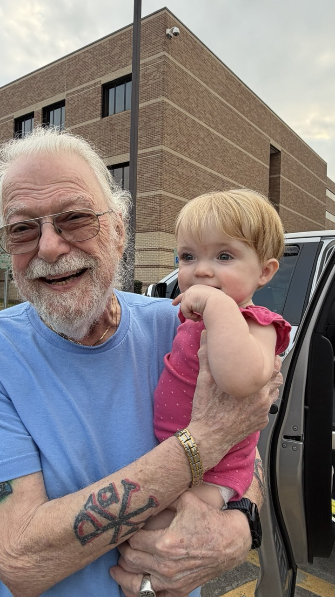

Essays · Poems · Haikus
A Lifetime of Thought,
Written Down
"We seek without that which can only be found within — a Divine spark, closer to us than we are to ourselves."— George Gondron, Yearning
Writings
Blog

About George Gondron
George Gondron has spent decades exploring the philosophical and spiritual dimensions of human experience. His writings reflect a lifetime of observation, introspection, and dialogue with the enduring questions of existence.
Through essays, poems, and reflections, George examines the questions most of us push aside: What does it mean to be conscious? How do we grow beyond our limitations? How do we live authentically?
This archive is a gift freely shared — a lifetime of thinking, written down for anyone who seeks deeper understanding.